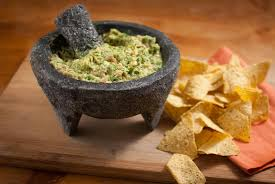

GUACAMOLE MEXICANO
Ingredients
- 9 avocados
- 3 limes/lemons
- handful fresh coriander, chopped
- salt and black pepper
- chilli flakes to taste
Preparation
- cut the avos in half, take out seed. put the inside of avos in a morter.
- put in the lime juice
- smash the avos up, leaving some texture
- mix in the coriander, salt and pepper and make it as spicy as you'd like.